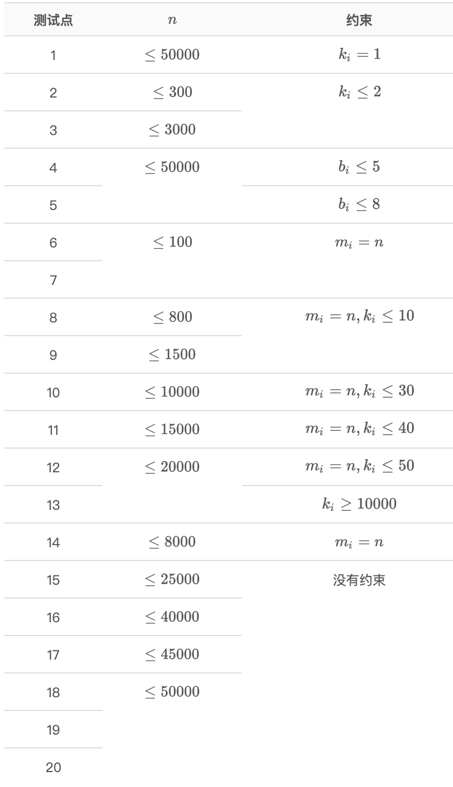

【样例1解释】
询问 1：对于序列 (9,6,3,1,5)，可以选取子序列 (9,6,3,1)，它的最长上升子序列长度为 1。
询问 2：对于序列 (9,6,3,1,5,12,8)，可以选取子序列 (9,6,3,1,12,8)，它的最长上升子序列长度为 2。
询问 3：对于序列 (9,6,3,1,5,12,8,4,2)，可以选取子序列 (9,6,5,4,2)，它的最长上升子序列长度为 1。
询问 4：对于序列 (9,6,3,1,5,12,8,4,2)，可以选取子序列 (9,6,3,1,12,8,4,2)，它的最长上升子序列长度为 2。
询问 5：对于序列 (9,6,3,1,5,12,8,4,2,2,2)，可以选取子序列 (9,6,5,4,2,2,2)，它的最长上升子序列长度为 1。
询问 6：对于序列 (9,6,3,1,5,12,8,4,2,2,2)，可以选取子序列 (9,6,3,1,5,12,8,4,2,2,2)，它的最长上升子序列长度为 3。
【数据范围与约定】

 Comet OJ
Comet OJ